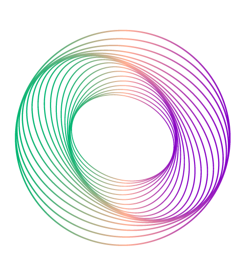

EA 1 - Interaktiv animierte Scheibe
Aufabenstellung
Implementieren Sie eine sich drehende 2D-Scheibe aus Einzelbildern, welche Sie mit JavaScript laden und in einem Image-Element zeigen (nicht im Canvas). Die Einzelbilder sollen, ähnlich wie bei einer Sprite-Sheet-Animation ode einem Animationsfilm, so ausgetauscht und eingeblendet werden, dass visuell der Eindruck einer Rotation entsteht. Auf jedem Einzelbild ist ein Rotationszustand der Scheibe zu sehen, z. B.: 0°, 15°, 30°,...
Es ist Ihnen überlassen, ob sie die Bilder auf mehrere Dateien verteilen, oder alle Bilder der Animation als Sprite-Sheet also in einer Datei anordnen.
Interaktion
Auf den Tastendruck 'l' oder 'r' soll sich die Scheibe augenscheinlich ein Stück nach links beziehungsweise nach rechts drehen. Zum Drehen muss man wiederholt drücken (mit l und r soll es nur also einen Schritt/ ein Bild weiter gehen.).
Erweiterung 1
Die Scheibe dreht sich automatisch mit Taste "a", dazu muss diese kontinuierlich animiert werden (die Animation sollte bei einem weiteren Drücken von "a" auch wieder angehalten werden).
Erweiterung 2
Außer einer Scheibe kreieren und animieren Sie noch ein anderes Objekt Ihrer Wahl als Sprite-Sheet, z. B. einen hüpfenden Hasen.
Fahren Sie mit der Maus über das Bild, und sehen Sie den Dinosaurier springen!